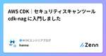
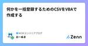
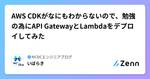
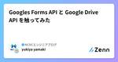
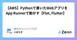

NCDCエンジニアブログのフィード
https://zenn.dev/p/ncdc
NCDC株式会社( https://ncdc.co.jp/ )のエンジニアチームです。 募集中のポジションや、採用している技術スタックの紹介などはこちらをご覧ください！ https://github.com/ncdcdev/recruitment
フィード

CodePipelineで推奨のEventBridgeがクロスアカウントだと中々大変な件
NCDCエンジニアブログのフィード
記事の内容少し前の話なのですが、2023年8月頃からCodePipelineのCodeCommitの検出がポーリングで非推奨となっておりその対応としてEventBridgeによるイベント駆動にする必要がありました。この関係でCodePipelineを使ってCI/CDを構築する際、イベント駆動にしたかったのですが、プロジェクトの環境的にCodeCommitとCodePipelineが異なるアカウント同士いわゆるクロスアカウントの関係で中々大変でした。備忘録として今回の作業内容をまとめてみたいと思います。https://docs.aws.amazon.com/ja_jp/even...
2日前

Amazon API Gatewayの統合リクエストで、パスパラメータが自動でマッピングされなかった
NCDCエンジニアブログのフィード
AWSでAPI Gatewayを扱っていて、少しハマりました。ググっても情報が見つからず、ChatGPTに聞いても答えを知らなかったので、記録を残しておきます。 事象API Gatewayでは統合リクエストをデフォルト設定にしておけば、リクエストのパラメータはそのままバックエンドに渡してくれるものだと思っていました。しかし、クエリパラメータは自動でマッピングしてくれたのに、パスパラメータは指定したら500エラーになってしまいました。 解決策統合リクエストのURLパスパラメータにマッピングの設定を追加したらパスパラメータを正常に使用することができました。 詳細 今回...
3日前

【Next.js】ANGEL Dojoでフロント実装に使用したライブラリ
NCDCエンジニアブログのフィード
昨年参加させていただいたANGEL Dojoに関する記事です。私がフロント担当だったかつNext.js(Page Router)を使用したため、そちらで使用したライブラリを一部紹介させていただく内容になります。この記事を通して、「へー、こんなのあるんだ」と思っていただけると幸いです。 ANGEL DojoとはANGEL Dojoは、AWS(Amazon Web Service)が主催する若手エンジニア向けのトレーニングイベントになります。基本2社1組のチームで、AWS関連の座学・サービス開発を進めていく3ヶ月ほどのプログラムです。https://aws.amazon.com...
3日前

AWS CDK｜セキュリティスキャンツール cdk-nag に入門しました
NCDCエンジニアブログのフィード
昨年 CDK に入門し、しばらくして cdk-nag のことを知りました。当時から気になっていたのですが、この度社内エンジニアチーム活動時間で触れることができたので、cdk-nag の概要を入門者のアウトプットとして記録することにしました。cdk-nag 自体は目新しいものではなく、2022 年に re:Invent でも紹介されており[1]、cdk-nag を検索すると既にさまざまな Tips が公開されています。使いこなしていきたいです。 cdk-nag とはhttps://aws.amazon.com/jp/blogs/news/manage-application-sec...
9日前

何かを一括登録するためのCSVをVBAで作成する
NCDCエンジニアブログのフィード
概要タイトルの通り、何かのシステムにCSVで一括登録したいとき、エクセルに入力したデータをCSVに変換するVBAのサンプルコードを紹介しています。 この記事の経緯システムへ何かデータを一括登録するときに、フォーマットに沿ったCSVを作成する必要がありますが、以下のようなケースにおいて、エンドユーザーだけでは正しいCSVを作成するのには難しい場合があります。バリデーションが複雑ユーザーがシステムを利用する際はシステム側がいい感じにエラーを出してくれるので、一定のルールに沿った正しい入力値になるよう誘導してくれるるはずしかしそれをCSVで人力で作成しようとするのは難し...
9日前

AWS CDKがなにもわからないので、勉強の為にAPI GatewayとLambdaをデプロイしてみた
NCDCエンジニアブログのフィード
はじめにCDKを知るために、なるべく簡単なコードでAPI Gateway + LambdaのAPIを作りながら勉強してみました。半年後の自分が内容を忘れててもこれを読めば完全に理解できるように記録を残します。間違いなどあれば優しくコメントで指摘いただけると助かります。 そもそもAWS CDKとは？そもそもAWS CDKとはなにか。AI(Gemini)に聞いてみました。AWS CDKとはなんですか？ AWS CDK とはAWS CDK は、最新のプログラミング言語を使用してクラウドインフラストラクチャをコードとして定義し、それを AWS CloudFormation ...
10日前

Googles Forms API と Google Drive API を触ってみた 1
1
NCDCエンジニアブログのフィード
概要 Googles Forms APIgoogleフォームをプログラムから操作するための API です。この API を使用すると、googleフォームの作成、編集、回答の取得などの操作を自動化したり、カスタムアプリケーションとの統合を行ったりすることができます。 Google Drive APIgoogleドライブのファイルやフォルダを操作するための API です。この API を使用すると、googleドライブ内のファイルやフォルダの作成、変更、削除、検索などの操作を自動化したり、カスタムアプリケーションとの統合を行ったりすることができます。 前提googl...
12日前

【AWS】Pythonで書いたWebアプリをApp Runnerで動かす【Flet, Flutter】 1
NCDCエンジニアブログのフィード
はじめにAIを中心としたアプリ開発をする時はPythonが主流かと思います。一方でWebのフロントエンド開発は通常TypeScriptやJavaScriptで書く必要があります。ある程度規模の大きいアプリであれば、フロントエンドとバックエンドは分離するべきなので言語が分かれていても大きな問題はないかと思います。しかし、PoCなどの簡易的にアプリを作りたい場合にはコスト増や人的リソースの問題が出てきます。Streamlit等のモダンなPythonのWebフレームワークを使えばPythonのみでWebアプリを作ることが出来ます。しかし、これらのフレームワークはWebSocketに依存...
13日前

【Flutter】loggerなどでデバッグコンソールに出力される文字に色がつかない
NCDCエンジニアブログのフィード
Flutter のログライブラリでメジャーなlogger などを使用すると、デバッグコンソールでのログ出力が種類ごとに色がつくようになる。logger の pub.dev から引用しかし、基本の設定をして実際に動かしてみると Android だとデフォルトで問題なくログ毎に色分けされているが、Ios だと色がつかない。Ios でも色がつくようにしたい。AndroidIos 検証環境エディタは VSCode を使用。サンプルのアプリは以下のようなボタンが並んでるだけの画面を想定。冒頭にある gif も以下のサンプルコードで作成したもの。...
14日前
reactってなに？
NCDCエンジニアブログのフィード
reactを改めて使うので思考整理のためにかいていきます💪（追加で気づきなどあれば追記していきます。） どういう意味？reactを英語辞典で検索すると「反応する」という単語が出てきます。SPAの、ページ遷移をせずに画面の一部を更新する性質を指しているのだと思います。 公式ドキュメントが変わったらしい実際に公式のドキュメントを見ていきたいのですが最近内容を更新したみたいで、現在はこちらが最新になっています。https://ja.react.dev/以前のサイトはこちらに移行されたそうです。UIが変わったのと、実践のサンプルが大幅に追加されたそうです。https:...
16日前
ECSを通してローカルからRDSに接続する
NCDCエンジニアブログのフィード
この記事に書いてあることecstaというツールでECS上のApplication ServerからDB Instanceにport fowardingするツール選定を含めて別のやり方でも可能だが一例を記載するもっと良い方法があれば教えて下さい 構成今回想定している構成は次の図の通りです。ECS上にApplication Serverが存在し、RDSとの疎通は取れている状態です。開発・運用においてRDSにローカルからアクセスしたいことがあった時、踏み台インスタンスを作成したりセキュリティに穴を増やしたくなかったので、既存のコンテナを流用してDBへport f...
20日前
Amazon API GatewayのREST APIとHTTP APIの違いで戸惑った話
NCDCエンジニアブログのフィード
この記事で言いたいこと、まとめAPI Gatewayには、REST API(v1)とHTTP API(v2)の2種類があるHTTP API(v2)は、REST API(v1)と比べて高速でコスト効率がよい代わりに機能が少ないとよく言われているしかし、HTTP API(v2)が機能面でも優れている点もある。HTTP API(v2)はECSと直接統合できるが、REST API(v1)では間にNLBが追加で必要 詳細 きっかけもともとは、AWS Amplify(Gen1)で作ったコンテナベースのAPIがありました。このAPIはAmplifyで作ったCognitoで認証...
24日前
【React】react-konvaでSVG画像を描画する
NCDCエンジニアブログのフィード
https://konvajs.org/docs/react/Images.htmlkonva ドキュメントの react/images 項目には SVG 画像の使用方法 については特に記載されていない。https://konvajs.org/docs/sandbox/SVG_On_Canvas.html上記のリンク先で SVG について色々と記載されているが、サンプルコードは HTML なので少々見にくい。なので、 React で SVG 画像を描画する方法について、上記リンク先の内容を参考に色々と試していく。 はじめにSVG 描画の検証にあたり以降の記載に出てくる...
1ヶ月前
AWS BedrockとSlackの連携で社内専用チャットbotを作ってみた
NCDCエンジニアブログのフィード
はじめに2023年11月に社内で行われたイベントにて、AWS Bedrockを連携させたSlackチャットbotアプリの作成をしました。当時はBedrockが公開されて間もなかったため、何かBedrockを活用した動くものを作ってみようというのが動機になります。その過程で大変だったBedrockが関係している点を中心にハンズオンレポートを作成しました。 アプリ概要構成は上記の通りです。全体としては学習フェーズとアプリ利用フェーズに分かれています。学習用ソースをアップロードしたブランチをGithub上でMainブランチにマージすることでコンテナのリスタートおよび、Bedr...
1ヶ月前
AWS + Google Workspaceでの認可アイデア
NCDCエンジニアブログのフィード
記事の内容AWS + Google Workspaceを活用した認可について考えてみました。個人でGoogleアカウントを持っている持っているかたは、アプリのログイン画面でGoogleでログインというボタン見たことがあるかと思います。これはGoogleアカウントからGoogleに登録してある自身の情報を取得してログインできる機能です。Google Workspace上のアカウントでも同様に利用することができます。このGoogle Workspace上のアカウントでログインできるということを活用すると、社内のGoogle Workspaceのメンバーだけアクセス可能なアプリを作成...
1ヶ月前
ユースケース駆動で要件定義ドキュメントを作成する
NCDCエンジニアブログのフィード
本記事について最近この本を読んで、実際のプロジェクトで使ってみているところです。試行錯誤の真っ最中です。良さそうな感触はありつつ、結構大変だな〜と思うところもあったので、体感したみた感想を交えて実際の作成方法も紹介していきます。『ユースケース駆動開発実践ガイド オブジェクト指向分析からSpringによる実装まで』https://www.amazon.co.jp/dp/B01B5MX2TC/また、ユースケース駆動開発（ICONIXプロセス）自体は別の方が紹介してくれているので、本記事では詳細は割愛した上で、詳細設計や実装の話は完全に省き、要求定義〜基本設計までの流れについて書...
1ヶ月前
LLRT + TypeScriptのLambdaをCDKでDeployする
NCDCエンジニアブログのフィード
LLRTとは?AWSが最近公開したJavascriptランタイムがLLRT(Low Latency Runtime)です。Lambdaが10倍速くなって2倍安くなるらしいです。公式はこちらhttps://github.com/awslabs/llrt 難しいことは飛ばしてCDKでDeployする実用するつもりも速度の検証とかをするつもりも今のところはないですが、とりあえず動かしてみました。 既にCDK用のライブラリを作った方がいるので遠慮なく使用する公式のexampleを参照するのが一番良いのですが、TypeScriptのビルド設定などが思ったより面倒くさかったで...
1ヶ月前
【React】ブラウザのウィンドウサイズを自動検知する
NCDCエンジニアブログのフィード
はじめに以降にカスタムフックのコード例を記載しますが、全て以下のcreate-react-appで作成された初期のApp.tsxベースのコードで動きます。どのカスタムフックのパターンでも呼び出し側のコードは同じで、同じ動作となります。 App.tsximport "./App.css";import { useWindowSize } from "./hooks/useWindowSize";function App() { const { windowWidth, windowHeight } = useWindowSize(); // const [win...
1ヶ月前
ウェブフレームワークのAstroを触ってみた
NCDCエンジニアブログのフィード
以前から気になっていたウェブフレームワークのAstro について、社内フロントチームでざっくり学び、チュートリアル程度の動作確認をしてみた感想をまとめてみました。 Astro とは静的コンテンツ中心のウェブサイトに特化した ウェブフレームワークです。2022 年 8 月に v1.0 がリリースされ、2024 年 2 月時点では v4.3.6 がリリースされています。https://Astro.build/ 特徴https://Astro.build/integrations/Astro はオールインワンのウェブフレームワークです。 Astro には、ウェブサイトを...
1ヶ月前
LambdaからSSL/TLSでRDSに接続する
NCDCエンジニアブログのフィード
記事の内容Lambda(Node.js)からRDSへ接続するアーキテクチャを設計することがあり、SSL/TLSで接続するためのポイントをまとめました。AWS Lambdaはサーバーレスアプリケーションで、よく使うサービスですがVPC内にも作成することができます。VPCに配置するユースケースの一つにRDSへのアクセスしたいケースがあると思います。しかし、LambdaでRDS PostgresにアクセスしようとするとSSL/TLSで接続しないと、下記のようにエラーが出てしまいました。これはRDS PostgresがデフォルトでSSL/TLS接続の設定になっているためでした。プラ...
1ヶ月前